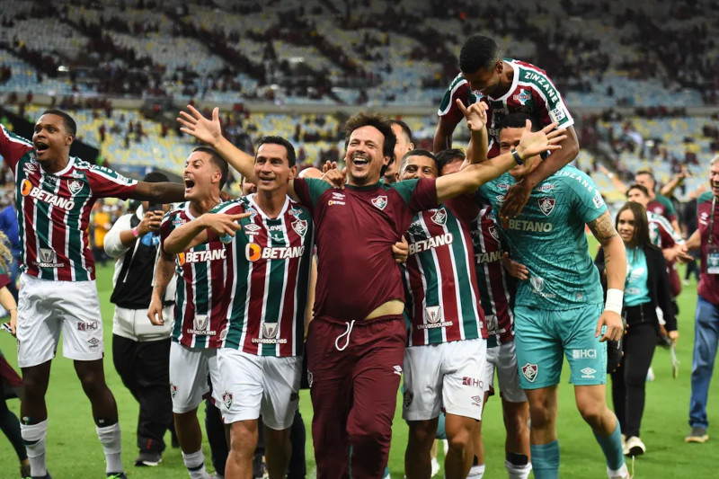
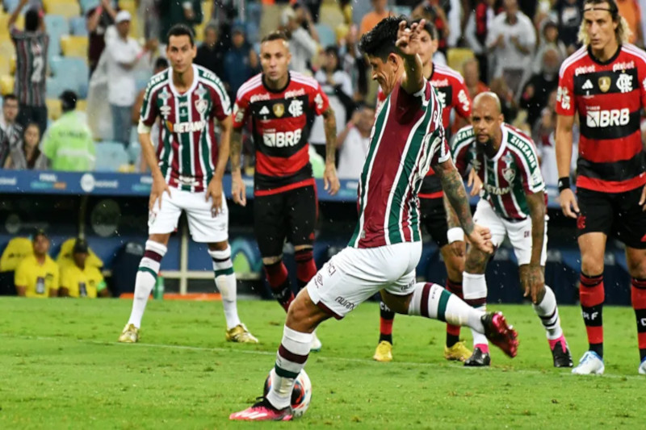

Fluminense põe Flamengo na roda, engole rival os 90 minutos e enfim dá título que Diniz merecia!
Com atuação de gala, Flu goleia por 4 a 1 e fatura o bicampeonato carioca.
Chame do que quiser: chocolate, amasso, vareio, passeio... Afinal, o Fluminense colocou o Flamengo na roda e engoliu o rival nos 90 minutos da final do Campeonato Carioca no Maracanã, de uma forma como raramente se vê um time dominar outro da mesma divisão no futebol brasileiro. A goleada contundente por 4 a 1, seguida do grito de bicampeão entalado na garganta por 39 anos, adoçaram o dia de Páscoa que a torcida tricolor jamais vai esquecer. Muito menos Fernando Diniz, o técnico tricolor tem totais méritos em cima de um trabalho a longo prazo, que está prestes a completar um ano, e transformou o futebol do Fluminense no mais vistoso do Brasil em 2023. O título tardou, mas não falhou. O treinador, que já merecia desde os tempos de São Paulo, enfim conquista o seu primeiro troféu de expressão na carreira. E com muita justiça ao "Dinizismo".
Se no primeiro jogo da final Vítor Pereira conseguiu armar uma arapuca para anular o Fluminense, na segunda partida Diniz soube preparar uma armadilha da armadilha, digamos assim. O técnico tricolor viu que a estratégia de ter dois pontas abertos não foi suficiente para abrir a linha de cinco defensores do Flamengo há uma semana, e dessa vez deixou Arias livre. O colombiano flutuou e muitas vezes dobrou com Keno no mesmo lado, algo que ensaiou diante do Sporting Cristal na Libertadores. Além disso, agrupou mais suas linhas, deixando todo mundo próximo da bola. E ajustou o posicionamento de Keno, que junto com Alexsander teve grande importância defensiva nas coberturas pelo setor de Marcelo, permitindo ao lateral se aventurar como um "falso meia". E os números são prova do "chocolate": no primeiro tempo, teve 60% de posse de bola, sete finalizações contra três, e quatro chances de gol contra nenhuma do Flamengo. Foram elas: o chute na trave de Alexsander aos 14 minutos; o golaço de Marcelo aos 26; o gol de Cano aos 31, após passe brilhante de Ganso; e o outro chute do camisa 5 que Santos salvou cara a cara. No segundo tempo, os números foram mais equilibrados, mas ainda assim o Fluminense seguiu melhor. Terminou com 50% de posse de bola, 12 finalizações a 11 e sete chances de gol contra três. Cano, de pênalti e de rebote aos 10, e Alexsander, aos 19, marcaram, enquanto o Flamengo parou em Fábio com Thiago Maia no primeiro minuto e com Matheus França aos 14. O gol de Ayrton Lucas foi sair só nos acréscimos.
Por falar no pênalti de Cano quando o placar ainda estava 2 a 0, ninguém se ofereceu para cobrar (Ganso e Arias são os cobradores oficiais, junto com o atacante). O argentino, que já tinha perdido um na final do Carioca do ano passado, foi quem assumiu a responsabilidade de novo. Perdeu a cobrança e fez no rebote, mas foi quem mais mostrou "colhão" na hora da verdade. Com o segundo título carioca e 62 gols em 84 jogos, o camisa 14 já virou ídolo e ganhou até bandeirão da torcida. E, claro, teve um grande fator psicológico de pano de fundo na final, o que é mérito total de Diniz. Tanto que nem parecia que o Flamengo é que tinha poupado jogadores no meio de semana e o Fluminense jogado a estreia na Libertadores com força máxima. O domínio técnico foi tão grande, que parecia até "totó" ("pebolim", "Fla-Flu", "futebol de mesa"... o nome varia de acordo com a região do país). A bola ia e voltava e continuava nos pés do Flu. Os jogadores tricolores pareciam estar sempre um ou dois segundos na frente dos rubro-negros, completamente perdidos na marcação.